地政学
タンパはメキシコ湾とカリブ海に向く港湾都市で、港、空港、軍事司令部、高速道路が西岸を外の世界へ結びます。州都ではなくても、防衛、物流、移民、観光、災害対応を担う街です。湾の安全と外交感覚も測ります。

🇺🇸 アメリカ合衆国 / 北米 / World City Atlas
メキシコ湾へ開く湾岸の港、ラテン文化、軍事と医療、観光とスポーツ、急成長する住宅地、湿地とハリケーンリスクが同時に見えるフロリダ西岸の中核都市です。
都市の骨格
タンパはタンパ湾の奥に位置し、港湾、空港、軍事施設、医療拠点、観光地、郊外住宅地を束ねます。水辺の魅力と災害リスク、ラテン文化と新住民の流入が同じ街路に重なります。
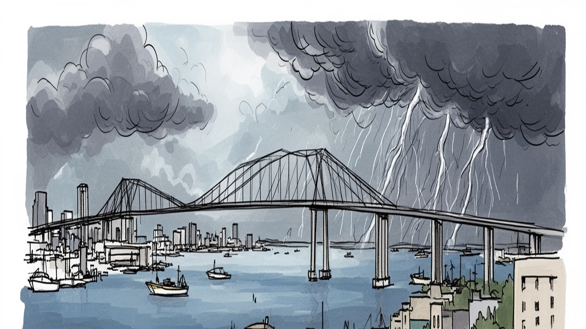
タンパはメキシコ湾とカリブ海に向く港湾都市で、港、空港、軍事司令部、高速道路が西岸を外の世界へ結びます。州都ではなくても、防衛、物流、移民、観光、災害対応を担う街です。湾の安全と外交感覚も測ります。
港湾、医療、金融、保険、軍事関連、大学、観光、物流、建設が雇用を支えます。ホテル、飲食、介護、清掃、配送、屋台、市場の仕事も厚く、賃金と家賃の差が暮らしを左右します。学生と家族の通勤も重なります。
イーバーシティのキューバ系、スペイン系、イタリア系の記憶に、ラテン音楽、教会、葉巻、家族の食堂、ガスパリラの祝祭が重なり、湾岸都市の帰属意識を作っています。夜の踊り場と食卓にも深く記憶が残ります。
住民は車、橋、モール、水辺、公園、球場、学校を使い分け、旅行者は湾岸、歴史地区、水族館、試合を巡ります。湿気、雷雨、住宅費、交通、暴風雨への備えも日常の条件です。子どもと高齢者の移動も大きな課題です。
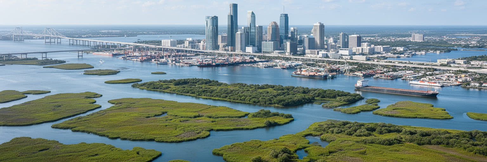
タンパを理解する出発点は、メキシコ湾に開く大きな内湾と、その奥に広がる低地の都市構造です。タンパ湾は外海の荒さを少し和らげながら、港、漁業、観光、軍事、住宅開発を呼び込みました。ヒルズボロ川は都心を水辺へつなぎ、橋と高速道路はセントピーターズバーグ、クリアウォーター、郊外住宅地、ビーチリゾートを一つの通勤圏へ結びます。朝夕には橋の上で湾風と排気の匂いが混じり、路面電車のベルや高速道路の連続音が水辺の静けさへ入り込みます。湾の近さは景色だけではなく、高潮、浸水、湿地の消失、水質、赤潮、保険料、避難路の問題を常に伴います。新しい高層住宅や再開発地区が水辺へ近づくほど、誰がリスクを負い、誰が眺望の利益を得るのかが問われます。橋を渡る短い移動の中に、リゾート、倉庫、基地、湿地、郊外の学校が連続します。子どもの通学、高齢者の通院、観光客の移動も同じ橋に集中します。地図上では近く見える場所も、車を持つかどうか、渋滞を避けられるか、災害時に逃げられるかで生活の距離が変わります。湾を読むことは、水辺の明るさと都市の不平等を同時に読むことです。近年の再開発は川沿いを歩きやすくしましたが、海抜、排水、橋の容量という古い条件は消えません。土地の価値が上がるほど、地形を忘れた計画の危うさもさらに大きくなります。
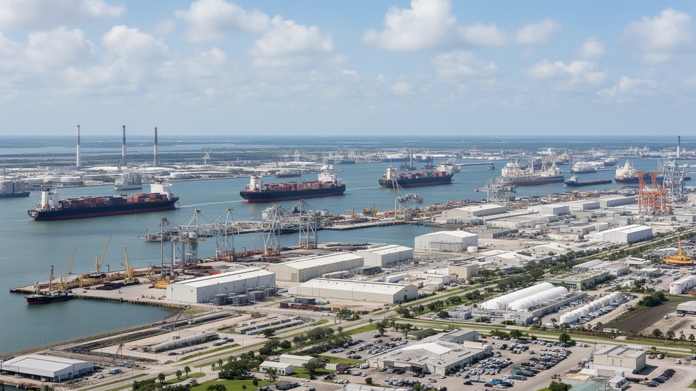
タンパ港は、観光客が見る水辺の背後で、フロリダ西岸の実務的な経済を支えています。石油製品、肥料、建材、食品、コンテナ、クルーズ、工業貨物が、湾の航路、鉄道、州間高速道路、倉庫群を通じて動きます。港は中南米やカリブ海、メキシコ湾岸、米国内陸をつなぐ接点であり、都市の国際性を静かに示す場所でもあります。港湾労働者、船員、通関業者、整備士、トラック運転手、倉庫作業員、警備員、クルーズ関連のサービス職が働き、マクディル空軍基地に関わる軍の雇用や契約も都市経済を支えます。物流は税収と雇用を生む一方、排気、騒音、道路負荷、水質、危険物管理、低所得地区への環境負担を伴います。早朝の市場へ向かう魚介、ホテルへ入るリネン、スタジアムの売店へ届く食材もこの流れの一部です。港の競争力は、巨大船に対応する設備だけでなく、労働条件、災害時の復旧力、脱炭素燃料、鉄道との接続にも左右されます。タンパを湾岸の観光都市としてだけ見ると、この貨物の都市は見えにくくなります。港の存在を読むことで、シーフード、燃料、建設資材、旅行産業がどのように日常へ届くかが見えてきます。クルーズ船の華やかさと燃料タンクの無骨さは同じ湾に並びます。港湾地区は暴風雨後の燃料、食料、復旧資材の入口にもなり、平時の効率だけでなく回復力が地域全体の安全を左右します。
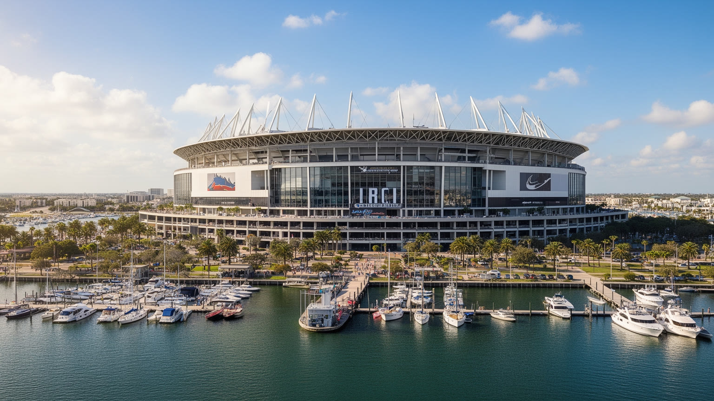
タンパの観光は、ビーチだけで完結しません。都心のリバーウォーク、水族館、イーバーシティ、ブッシュガーデンズ、クルーズ港、近隣の湾岸リゾート、スポーツ観戦が組み合わさり、家族旅行、週末滞在、会議、クルーズ前後の宿泊を生みます。Buccaneersの試合、Lightningのホッケー、Raysをめぐる球場論議、Rowdiesのサッカー、野球の春季キャンプは、地域の誇りと消費を動かします。試合の日にはバー、ホテル、配車、警備、清掃、駐車場、屋台、ローカルTVの中継、Tampa Bay Timesの記事が一斉に街を満たします。観光は華やかな収入源ですが、季節需要、低賃金サービス職、交通渋滞、短期賃貸、公共空間の混雑も伴います。リバーウォークや再開発地区が美しく整うほど、中心部の地価は上がり、住民の日常の店や安い住まいが押し出されることもあります。スポーツは都市を一つに見せますが、チケット価格や移動手段によって参加できる人は限られます。晴れた水辺の祝祭と、試合後の片付け、深夜の帰宅、翌朝の清掃は一続きの都市経験です。観光が地域の誇りになるには、収入を公共交通、公園、住宅、歴史地区の保全へ戻す仕組みが必要になります。都市側には、回遊を広げ、混雑を分散し、歴史地区を単なる背景にしない運営が求められます。
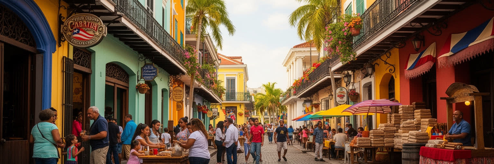
タンパの文化を語るうえで、イーバーシティの存在は欠かせません。十九世紀末から二十世紀にかけて、キューバ系、スペイン系、イタリア系の移民が葉巻産業を支え、工場、クラブ、新聞、劇場、食堂、相互扶助組織を作りました。葉巻工場の読書係が労働者へ文学や政治を読み聞かせた記憶は、労働と教育、移民文化が結びついた象徴です。今日のイーバーシティは昼の歴史地区であると同時に、ラテン音楽、クラブ、バー、深夜の食事が続く夜の街でもあります。ガスパリラの海賊祭は観光イベントであり、学校行事、仮装、パレード、地域企業の宣伝、警備や清掃の仕事を巻き込む都市の祝祭です。タンパのラテン文化はキューバだけではなく、プエルトリコ、ドミニカ、メキシコ、中米、南米からの新しい住民の暮らしにも広がります。教会、スペイン語メディア、家族経営の食堂、床屋、音楽、政治参加は、都市の帰属意識を形作ります。週末の夜にはクラブの低音、葉巻の香り、揚げ物の匂いが古い街路に混じります。一方で、歴史地区の商品化が進むと、文化は写真に撮られる飾りになりやすくなります。多文化性を読むには、名物のCuban sandwichや葉巻だけでなく、移民労働者の住宅、学校、医療、言語支援、世代間の記憶を見る必要があります。古いクラブや食堂が残ることは、都市が自分の労働史を忘れないための支えになります。
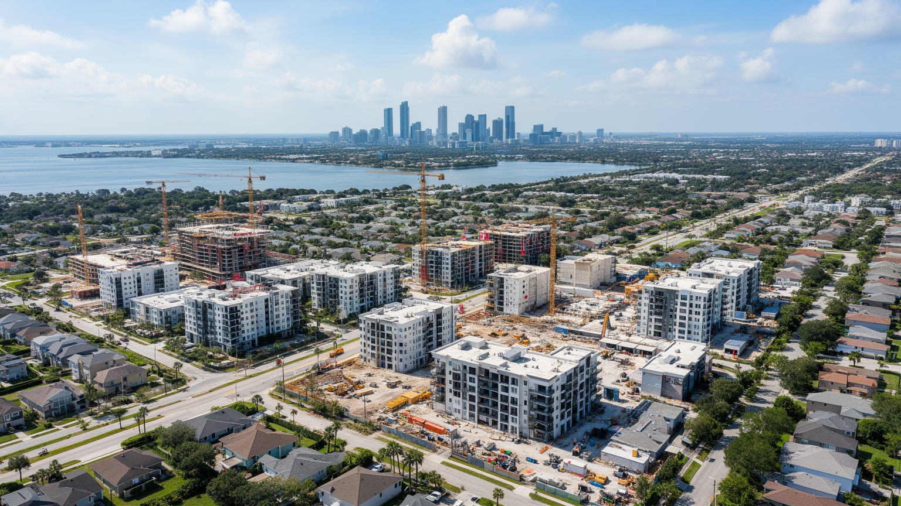
タンパ都市圏は、温暖な気候、雇用、税制、かつて比較的手頃だった住宅、リモートワーク移住によって人口を増やしてきました。都心では高層住宅やウォーターフロント再開発が進み、郊外では新しい戸建て、ショッピングセンター、学校、医療施設が広がります。Hyde Parkの歩ける街区やInternational Plazaの買い物空間は、上昇する消費力をよく映します。成長は税収、建設雇用、飲食やサービスの需要を生みますが、同時に家賃、住宅価格、保険料、交通混雑を押し上げます。かつて比較的安く住めた地域でも、給与の伸びが家賃に追いつかず、教師、看護師、飲食労働者、港湾やホテルの働き手が遠い場所へ押し出されます。新築供給だけでは、低所得者、高齢者、単身者、移民家族に届く住まいは十分ではありません。子どもの遊び場、学校区、介護施設、診療所への距離も住宅選びの重い条件になります。公共交通が限られる都市圏では、住宅が遠くなるほど車の費用も生活を圧迫します。タンパの成長を読むには、誰が中心に残り、誰が長い通勤を引き受けるのかを確認する必要があります。保険料や災害リスクが住宅費へ加わる点も、湾岸都市ならではの重い条件です。成長を暮らしの質へ変えるには、交通、学校、排水、緑地、手頃な住宅を同時に整える政策が欠かせません。
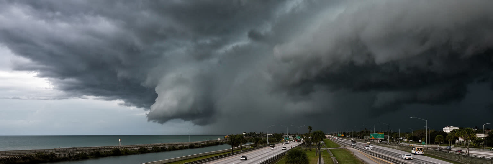
タンパの気候は、冬の穏やかさと夏の蒸し暑さによって都市の魅力を作ります。屋外の食事、湾岸の散歩、ウォータースポーツ、退職後の移住は、この温暖さに支えられています。しかし同じ気候は、午後の雷雨、熱中症、湿度、蚊、高潮、ハリケーンへの備えを日常へ持ち込みます。夏の夕方には空気が重くなり、遠い雷鳴、アスファルトの熱、雨の直前の金属のような匂いが街を包みます。湾の奥にある低地の都市は、強い暴風雨が進路を取れば大きな浸水被害を受ける可能性があります。避難路、橋、燃料、病院、介護施設、学校、港、空港の機能は、災害時に都市圏全体の弱点になります。ハリケーン前の買い出しでは、水、発電機、薬、ペット用品、介護用品が店頭から消え、高齢者や車を持たない世帯ほど準備の負担が重くなります。ローカルTVの気象予報とスマートフォンの警報は、学校の休校、港の閉鎖、店の営業時間まで左右します。家族の連絡網も重要です。気候リスクは水辺の高級住宅だけでなく、古い賃貸、英語情報に届きにくい移民、屋外労働者にも重いです。排水、湿地保全、暑熱対策、避難情報、電力復旧、地域の相互扶助、低所得者への支援が一体でなければなりません。晴れた湾岸の明るさは脆さを見えにくくします。見えない準備を怠らない都市だけが、温暖な暮らしを長く保てます。
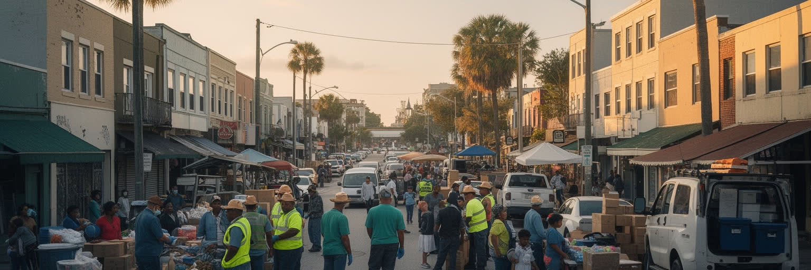
タンパの人口増加は、米国内からの移住だけでなく、ラテンアメリカ、カリブ海、アジア、欧州、アフリカからの移民によって支えられています。移民は医療、建設、ホテル、飲食、造園、清掃、介護、港湾、配送、小売、起業、大学研究など、幅広い場所で働きます。観光客が使うホテル、住民が通う診療所、新築住宅の建設現場、郊外のレストラン、夜間の清掃には、多言語の労働があります。University of South Floridaの学生や研究者は医療、工学、公衆衛生、起業の人材を送り出し、学生向けの家賃、バス路線、深夜営業の店も地域経済を動かします。学生街のカフェ、古着店、ライブ会場、安い食堂は若い消費とアルバイトを地域に生みます。一方で、就労資格、賃金未払い、労働災害、言語、医療保険、学校の支援、住宅の過密、交通の不便さは大きな課題です。政治的な移民論争は、現場で都市を支える人々の生活を見えにくくします。教会、地域団体、食料支援、法律相談、スペイン語メディア、学校は、都市の安全網として機能します。子どもの通訳、親の夜勤、遠い職場への送迎は、家庭の中で都市経済を支える見えにくい時間です。学校や診療所がその負担を理解できるかも、包摂の条件になります。多文化の活気は、働く権利と住まいの安定によって初めて持続します。
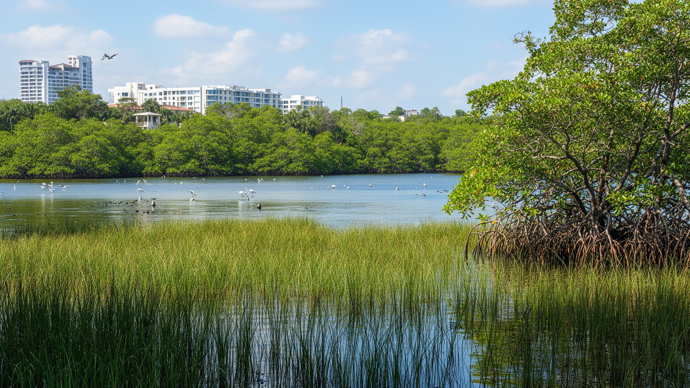
タンパの自然は、白い砂浜だけではありません。湾の湿地、マングローブ、海草藻場、河口、湖沼、公園、保護区は、魚、鳥、マナティー、甲殻類の生息地であり、高潮や水質悪化から都市を守る緩衝帯でもあります。開発によって湿地が失われると、見た目の土地は増えても、洪水を受け止める力や生態系の豊かさは弱まります。湾の水質は、下水、雨水流出、肥料、工業活動、港湾、赤潮、気温上昇の影響を受けます。住民にとって水辺は散歩、釣り、カヤック、パドルボード、子どもの自然学習、家族の週末の場所であり、観光にとっても重要な資産です。潮の匂いも記憶に残ります。自然を楽しむには、公園へのアクセス、駐車、公共交通、日陰、トイレ、安全な水質が必要になります。所得の高い地区だけが良い水辺を使えるなら、自然は公共財ではなく特権になります。タンパの環境を読むには、湾を飾りの景観としてではなく、都市の生命維持装置として見ることが大切です。湿地保全は開発を止めるだけの話ではなく、将来の災害費用、漁業、観光、健康を守る投資でもあります。学校教育や地域の清掃活動は、水辺を身近な責任として感じさせます。マナティーや鳥の姿は観光の魅力ですが、生き物が残ること自体が湾の健康の指標でもあります。都市が成長しても、見えにくい浅瀬と湿地を守れるかが未来を左右します。
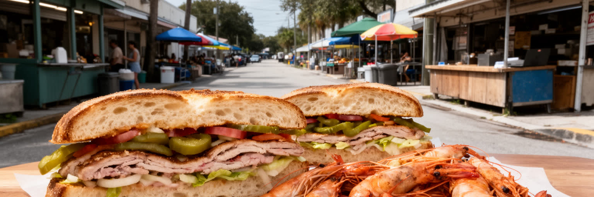
タンパの日常は、湾岸の明るい印象よりも多様です。朝の通勤は車と高速道路に強く依存し、学校、職場、医療、買い物、礼拝、スポーツ練習は広い都市圏に散らばります。都心の再開発地や水辺の散歩道が注目される一方、郊外のストリップモール、家族経営の食堂、スーパー、教会、学校、診療所が多くの住民の生活舞台です。食文化では、Cuban sandwich、カフェ・コン・レチェ、シーフード、バーベキュー、カリブ系やメキシコ系の料理、南部料理、クラフトビールが混ざります。青空市場や屋台、フードトラックは、観光客向けの楽しみであると同時に、移民家族の起業、地域の会話、労働者の昼食を支えます。週末には農産物市場、球場近くの屋台、モールのフードコートが別々の客層を集めます。飲食店は家賃、人手不足、保険、食材費、チップ制度に左右されます。タンパの生活の質は、リゾート的な余暇だけでなく、暑い日のバス待ち、夕方の渋滞、子どもの送り迎え、高齢者の通院、近所の食堂での会話にも表れます。都市を読むには、観光名所と同じくらい、何度も繰り返される買い物や食事の動線を見る必要があります。歩ける地区が増えても、都市圏全体では車なしの生活が難しく、公共交通や安全な歩道が不足すれば、学生や低所得世帯の自由な移動はさらに大きく限られ続けます。
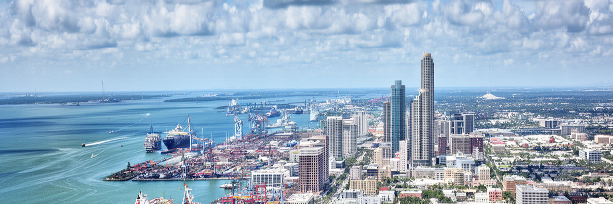
タンパは、温暖な湾岸都市、スポーツの街、移住先、観光拠点として親しみやすい顔を持ちます。その一方で、港湾物流、軍事、医療、金融、移民労働、ラテン文化、住宅危機、気候リスクが重なり、見た目以上に複雑な都市です。水辺の再開発は都市の魅力を高めますが、同時に家賃と保険料を押し上げます。港は国際経済を支えますが、排気や危険物管理を近隣へ残します。温暖さは人を集めますが、高潮、熱波、ハリケーン、赤潮は生活の基盤を揺らします。Tampa Bay TimesやローカルTVが伝える試合、暴風雨、住宅費、学校、犯罪、交通のニュースは、観光の明るい印象だけでは見えない都市の体温を示します。イーバーシティの歴史は豊かな文化遺産ですが、今日の移民労働を見なければ、過去の記念で止まってしまいます。旅行者には水辺、試合、食、歴史地区が残り、住民には住宅費、車移動、学校、保険、暴風雨への備えが続いています。子どもや高齢者の視点を加えると、都市の便利さはさらに具体的に見えます。両方を重ねると、タンパの都市性は規模の大きさではなく、湾岸の成長が抱える現代的な問いに現れます。成長を続けるほど、自然を残し、働く人を住まわせ、災害に備え、文化を商品化だけで終わらせない判断が求められます。湾を愛する感覚を、住宅、交通、湿地、労働の政策へ広げられるかが次の焦点です。